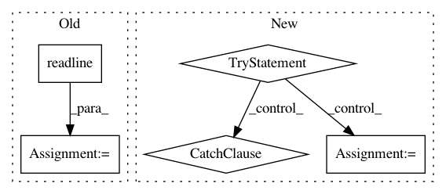

7c977cb5f370d2e8a8ceda762f8d22a3c668e8f0,fileinfo.py,,,#,20
Before Change
t_char = 0
try:
with open(file_name) as f:
line = f.readline()
t_char += len(line)
while line:
count += 1
line = f.readline()
t_char += len(line)
After Change
count = 0
t_char = 0
try:
with open(file_name) as f:
// Source: https://stackoverflow.com/a/1019572
count = (sum(1 for line in f))
f.seek(0)
t_char = (sum([len(line) for line in f]))
except FileNotFoundError as e:
print(e)
sys.exit(1)
// When open item is a directory (python2)
except IOError:
pass
// When open item is a directory (python3)
except IsADirectoryError:
pass
file_stats = os.stat(file_name)
// create a dictionary to hold file info
file_info = {
"fname": file_name,
In pattern: SUPERPATTERN
Frequency: 3
Non-data size: 5
Instances
Project Name: geekcomputers/Python
Commit Name: 7c977cb5f370d2e8a8ceda762f8d22a3c668e8f0
Time: 2020-03-22
Author: alopex4@163.com
File Name: fileinfo.py
Class Name:
Method Name:
Project Name: scipy/scipy
Commit Name: 4ab211d6dd50c043cacd24db93a6bc64cfdb9ed5
Time: 2017-07-21
Author: pav@iki.fi
File Name: tools/validate_runtests_log.py
Class Name:
Method Name:
Project Name: Calamari-OCR/calamari
Commit Name: e3673091d04ef00cea5d7d8bcac69c0dee40e585
Time: 2021-01-19
Author: wick.chr@gmail.com
File Name: calamari_ocr/utils/multiprocessing.py
Class Name:
Method Name: run